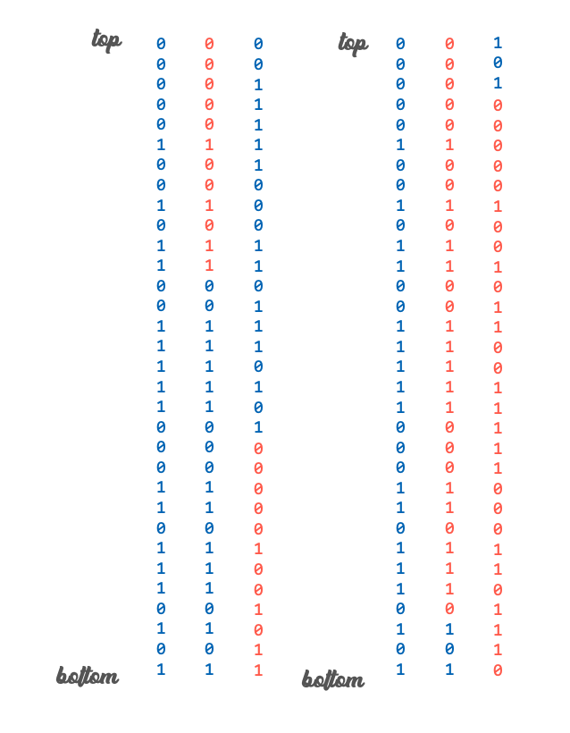
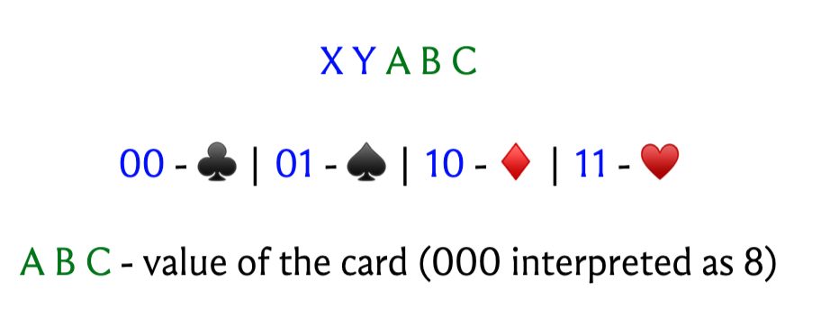
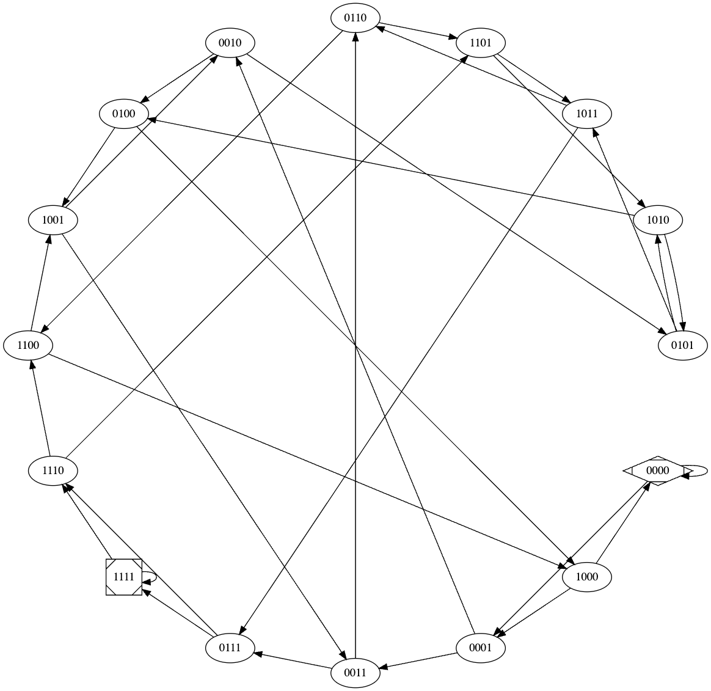

5 Of Cards and Graphs:
de Bruijn seuqences
Link to a Tweet thread summarizing these notes
Before we talk about exploring graphs, we will take a small detour to throw in some motivation. In our discussion here we will establish that knowing how to go around a graph can meaningfully help us pull off a spectacular card trick. I trust that this should leave us sufficiently interested in finding out how we can actually find those Euler tours, which is our next stop.
5.1 The Trick
A deck with 32 cards is given to someone in the audience.
Any number of cut shuffles1 are done.
Once the audience is satisfied that the deck is suitably shuffled, it is passed to someone, say P, from where the following happens:
P takes the top card and passes the deck to the next person (Q). Q takes the top card and passes the deck to the next person (R). R takes the top card and passes the deck to the next person (S). S takes the top card and passes the deck to the next person (T).All five people look at their cards without revealing them to anyone else.
Those who got red cards are requested to stand up.
All cards are identified.
1 A cut shuffle involves taking some number of cards from the top of the deck, placing them on the table, and then placing the rest of the deck on top of them. So if the stack has cards 1,2,3,4,5 from bottom to top, then it will look like 4,5,1,2,3 after a cut shuffle with two cards shaved off the top.
5.2 Behind the scenes
Interpreting reds as 1’s and blacks as 0’s, any sequence of five cards is a signal: a bitstring of length 5. This is — at least in principle — enough to ID one of the cards in a 32-card deck, for sure. But to ID the next five cards too? Wow!
So to begin with, let’s just focus on ID-ing card. The deck, of course, is setup: the cards appear in a specific order, one whose relevant properties are unperturbed by cut shuffles. Note that we have no control over how many times the deck is cut, so the top card could be effectively anywhere in from the original sequence. So what we need is a sequence of 32 bits:
b_0, b_1, \ldots, b_i, \ldots, b_{31}
with the following property. For any i \in \{0,\ldots,31\}, if B_i denotes2 the substring:
2 subscripts are mod 32
b_{i}, b_{i+1}, b_{i+2}, b_{i+3}, b_{i+4},
then we would very much like that b_i \neq b_j whenever i \neq j. This ensures that no matter how many times the deck is cut, when the members of the audience with the red cards stand up, we have a clean and unambiguous signal, which we can pre-relate by our powers of rote memory to the card at position i in said sequence. Because subscripts are read mod 32, note that this is really all we need. For example, here’s a seuquence that does happen to have the property we are after:
00000100101100111110001101110101
The diagram below shows why cut shuffles still result in sequences where the signal from any location continues to be unique, and in some sense, invariant across shuffles: suppose a position x corresponds to a certain signal S_x before a cut shuffle, then after a cut shuffle, if position x shifts to y, then S_y = S_x. Note that this would not be true if someone, say, enthusiastically riffle shuffled the pack — so do make sure to prevent this at all cost.

This property makes the sequence a robust device for card discovery: we simply associate a specific card with every 5-length bit string, and position the card corresponding to b_i at location i. By knowing the signature corresponding to the top five cards after any number of cut shuffles, you know where this signal appeared in the original sequence, and by turdging further along in the sequence, you also know the signals for the next five cards.
- memorize the sequence
00000100101100111110001101110101 - associate† a card with each bit-string of length 5
- memorize said association
- place cards as dictated by the sequence and given by the association
- profit and/or impress
† Note that the association has to respect the semantics of the bitstring: so the 1-positions get red cards and the 0-positions get black (or the other way round if you please, so long as you are consistent in your conventions throughout).
Notice that once you can read off one card, having committed the seuqence and the association to memory, you can also read off any of the cards after that. This does seem like a lot of memorizing, but it’s worth it for the impact.
5.3 Mnemonic improvements for an actual performance
If you want to make your life easier, you could use an association that is easy to remember:

So getting to the first card is quite straightforward already:
- If the first person is seated, they have a black card, and otherwise they have a red card. But this is immediate anyway from the convention, so not particularly impressive to point out.
- When the card is black: if the second person is seated, it is a ♣, otherwise a ♠.
- When the card is red: if the second person is seated, it is a ⬥, otherwise a ♥.
- Finally, the value of the card is just translating the last three bits to their value in decimal (remembering to map all zeroes to eight).
If you want to really impress with the next four, you could just memorize the whole sequence, but to avoid visible murmuring, you can also exploit a handy feature of this particular sequence that helps you navigate it with only a little bit of mental math.
It turns out that if you know b_i (which you do based on who stands up), you can obtain the next bit (i.e, the sixth bit relative to the start of b_i) in the sequence by simply adding the first and third bits from b_i. In other words, the sequence has the following nice pattern: standing anywhere, you can obtain the next bit by taking the sum (mod 2) of the bits that are three and five bits behind wherever you are standing. Go on, verify this for yourself!3
3 If you do, you’ll find this is not quite true at the fourth and fifth positions. The claimactually works if you drop any one of the leading 0’s, e.g. the first one. This gives you a sequence of 31 cards to work with which have this nice pattern. If you want to be a purist, though, you can commit this exception to memory.
5.4 de Bruijn Sequences
So how does this lovely self-working card-trick fit, even if as a detour, into our discussion about graphs?
Let’s step back for a bit. We pulled out the driver of this whole setup, the sequence:
00000100101100111110001101110101
much like a real magician pulls out a real rabbit from a real hat. You very likely raised an eyebrow and wondered about where this sequence came from. It’s a useful exercise to experiment with coming up with one, even if by means of ad-hoc scribbling. As a warmup, it’s worth trying to find one of length eight, where every 3-bit string occurs exactly once4.
4 Apparently the Sanskrit sutra yamätärajabhänasalagam (and variants thereof), which describes all possible triplets of short and long syllables, is considered evidence that such sequences were known in India from a while ago. Sanskrit meters are based on the system of short (laghu) and long (guru) syllables, and you might count this as a hint for the exercise here. If you are curious about the history of the sutra, look no further than this article.
It turns out that such sequences are in fact rather well-studied, and one way of generating them involves taking a walk in an appropriate graph! In particular, let us go back to our original task of generating a 32-bit sequence like the one shown above, except that we are on our own this time. Consider a graph where we have:
- a vertex for every bit string of length four, and let us say that the bit string associated with a vertex u is denoted by b_u; and
- an edge from u to v if the corresponding bit strings are all but the same: i.e, the 3-length suffix of u is the same as the 3-length prefix of v.
…although a bit of a monstrosity!

The following properties are worth thinking about:
One for every bit string of length four, so sixteen.
Fix a vertex v and let s_v denote the last three bits of v. The only outgoing edges are to vertices that represent the bit strings s_v0 and s_v1.
Fix a vertex v and let p_v denote the first three bits of v. The only incoming edges are from vertices that represent the bit strings 0p_v and 1p_v.
There are sixteen vertices and each of them has outdegree two, so the total number of edges is 32. Does that ring a bell yet?
Consider a vertex v. Let the bit string associated with v be denoted by WXYZ. For v to be adjacent to itself, we will need XYZ = WXY, which implies that W = X, X = Y, Y = Z.
So if W = 1, then we have that WXYZ = 1111 and if W = 0 then we have WXYZ = 0000.
These are the only two possible scenarios, so our graph has exactly two self-loops.
If you were to take an Euler tour in this graph, i.e, walk around visiting every edge exactly once, then it very naturally spells out a sequence as follows. Start with an empty string. Now as you move around, going from the vertex u to v along the edge (u,v) amounts to essentially “seeing one new bit”: recall that the suffix of u almost fully eats up the prefix of v, leaving one new bit to observe, which is what we tag on to our sequence. Once you have traveled along every edge exactly once, you’ve collected exactly 32 bits, so we have written out a sequence of length 32 by the time we are done5.
5 If edges were 1km roads, we would have been just 10km shy of a full marathon.
Now: our somewhat outrageous claim is that this infact is a valid de Bruijn sequence! Given that we have written out exactly 32 bits, it is enough to show that any bit sequence of length 5 shows up as a substring in this sequence starting from some position. The main intuition here is the following: suppose you want to “see” the bitstring PQRST in your sequence. Well, at some point in our walk on the graph, we moved from the vertex representing PQRS to the one representing QRST6. This made us add T to whatever sequence we had so far. Let’s rewind our walk a bit and see what happened in the last few steps too:
6 Indeed, this must have happened at some point, since we visit every edge exactly once.
LMNO → MNOP → NOPQ → OPQR → PQRS → QRST
Retracing our steps, here are the bits that would have been triggered by this walk: PQRST, and thus we are almost done. You might say: perhaps the edge from the vertex representing PQRS to the one representing QRST was taken very early on, at the start of the tour, so we don’t have these many steps to retrace: but here’s the thing — we are on a tour, so you can continue walking back past your starting point and the sequence would still have this overall form: it’s just that a few of those bits would be written at the end, rather than at the start, and that just means that we can find our substring wrapped around the end, which is a perfectly valid place to discover it.
Notice that there was nothing special about this whole process and the numbers four and five: you can generate so-called “de Bruijn sequences of order k”, which are bitstrings of length 2^k with the property that every k-bit string appears exactly once in the sequence as a substring (including wraparoudns), using exactly the same idea.
So you should be convinced by now — perhaps after reflecting for a moment or two — that de Bruijn sequences of any order in fact exist, which is not obvious at all from the definition. It turns out that there are actually quite a few of them: 2^{2^{k-1}-k}, to be precise, a formula we know thanks to de Bruijn, after whom the sequences are named.
You might wonder if there are other ways of coming up with these sequences, or possibly even enumerating them. These discussions are unfortunately out of scope, but there are several excellent resources for the curious. Much of these notes are based on the third chapter of the book Magical Mathematics: The Mathematical Ideas That Animate Great Magic Tricks which is a treasure of a book. Paraphrasing from this chapter, here is a little about the people behind this trick:
The origins of this trick go back to Charles T. Jordan in 1919, and the original version required a color pattern of length 6 to identify all the cards. Later William Larson and T. Page Wright came up with another variant involving 52 cards, and 3 people revealing the suits being enough for the magician to pick up the values. In the 1960s, Karl Fulves and, separately, P. Diaconis working with the chemist Ronald Wohl, derived dozens of tricks based on variations and extensions of Jordan’s idea.